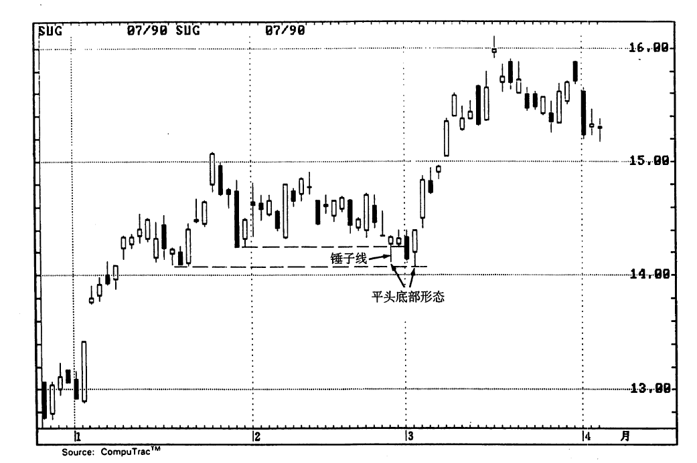
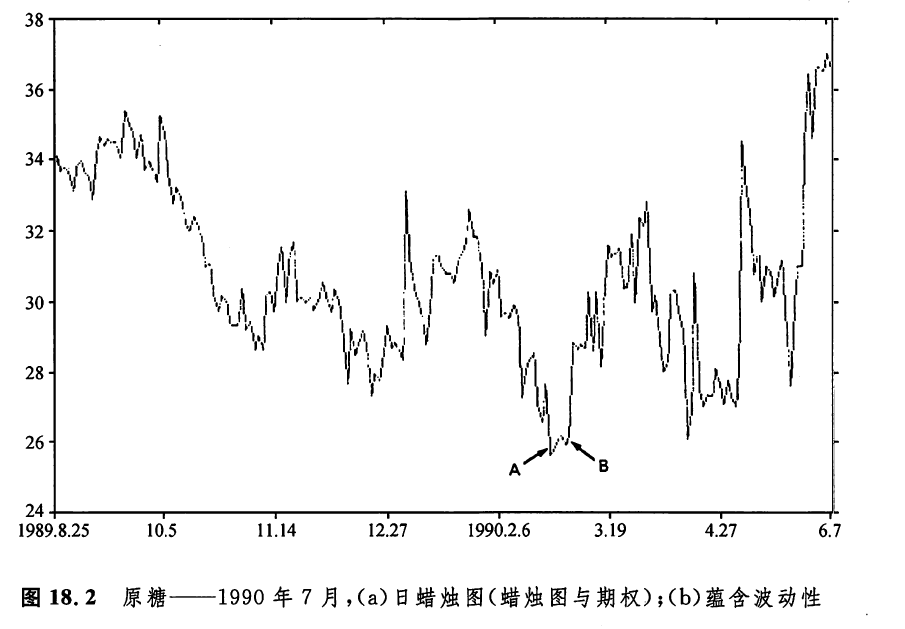
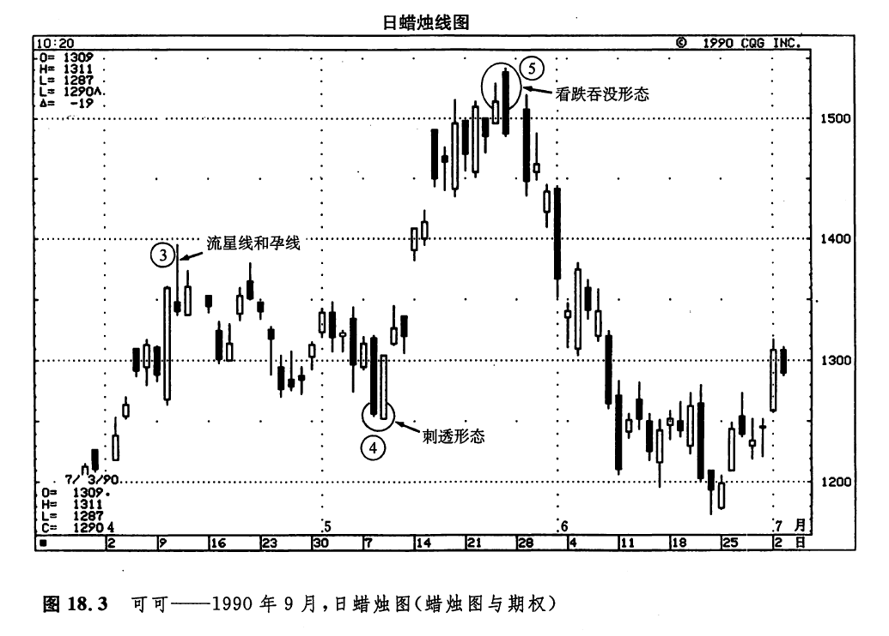

如果市场具有强劲的趋势性，并将波动性水平推升到了异常高的水平，在这种情况下，当蜡烛图反转指标出现时，可能提供了一个有利的时机，我们可以卖出波动性，或者平仓了结已有的波动性多头交易（在期权定价公式中，除了波动性之外，其他变量要么是已知的，要么是需要人为剪裁的。从严格意义上说，期权价格取决于波动性。因此，在期权业行内，实际上人们习惯于以波动性作为期权买卖的询价、报价形式——译者注）从这个意义上说，最有效的蜡烛图形态、或许是那些标志着市场将转入牛方和熊方的休战阶段的形态。在这样的形态中，包括孕线形态，反击蜡烛线形态，以及我们在第六章讨论的各种形态。
如果我们根据蜡烛图信号预期市场当前的价格趋势即将发生变化，就可以卖出波动性。如果市场转入了水平的区间中，那么在其他各项因素均不变的条件下（也就是说，没有季节性因素对波动性水平的影响，没有即将公布的经济数字，如此等等），波动性可能将下降。甚至在价格向相反方向逆转的情况下，如果开始时波动性已经处在难得一见的历史高水平上，那么波动性可能也不会增加。这是因为，推动波动性水平上升的动力，可能已经在当初的强劲趋势中释放出来了。
在帮助技术分析者决定何时买入波动性方面（或者决定何时平仓了结已有的空头波动性头寸方面，比如说已经卖出了跨式期权组合，或者卖出了宽跨式期权组合），蜡烛图的反转信号也有可能发挥作用。具体说来，如果市场本来处在某个水平交易区间中，这时出现了一个看跌的蜡烛图反转信号，那么我们可能预期市场即将形成新的趋势。在这个蜡烛图反转信号出现时，如果波动性水平正处于相对较低的位置上，那么技术分析者预见的可能不只是价格新趋势的产生，还可能预见波动性将随之上升。如果上述反转信号不是一个孤立的技术信号，而是许多技术信号（包括其他蜡烛图信号，以及西方技术分析信号）汇聚在一起，它们统统在基本相同的价位上发出了反转信号，那么，上述局面演化成真的可能性特别大。
如果我们打算利用蜡烛图技术来揭示市场波动性的变化，就应当注意以下问题：蜡烛图信号所揭示的波动性的变化很可能发生在短期内，只有在这个意义上，才能把握好蜡烛图信号的真正意义。这就是说，如果我们根据蜡烛图发出的信号买入了波动性，结果波动性果然上升了，但是即使如此，也不意味着市场的波动性能够始终维持在这种高水平上，直到该期权的有效期结束。
如图18.1所示，5月中旬出现了两个顶部反转信号。第一个，是紧随在一根长长的白色实体之后的十字线。第二个，是一个三只乌鸦形态。随着由这些顶部反转形态引发的抛售行情的发展，该市场的历史波动性呈扩张态势。当6月初的十字孕线形态形成后，这轮抛售行情也告终了。之后，价格趋势从下降转化为水平延伸。由于这一阶段横向延伸的价格环境，历史波动性开始收缩。可见，如果我们曾经在波动性上升的过程中入市买入的话，则有可能把这个十字孕线形态看成有用的信号，一方面，由此预期当前陡峭的价格趋势即将结束：另一方面，也预期市场波动性有可能随之开始下降。
根据我个人的经验，也出于其他某些原因，蜡烛图信号在研究历史披性方面效果较好，而在研究蕴含波动性方面，效果不及前者。尽管如此，正如图18.2所示，有时候，蜡烛图在预测蕴含波动性的短期变化方面，仍然是一项得力的辅助工具。1月份，市场形成了一轮剧烈的上涨行情。在这一阶段，随着这个上升趋势的发展，市场的蕴含波动性也在逐步上升。在2月份的绝大部分时间中，本图所示的原糖市场局限于从0.14~0.15美元的区间中波动。在这个相对平静的市场阶段，波动性也缩小了。
如图18.2（b）所示，2月26日，出现了一根锤子线（其位置如A点所示）。并且，这根锤子线的下影线一度向下穿过了1月底形成的一个支撑水平。但是，这个新低水平没能维持住。这就表明，熊方曾经试图控制市场，但最终却失败了。相隔了3个交易日之后，也就是3月2日（其位置如B点所示），是一根白色蜡烛线，它的下影线成功地维持在1月中旬的低点之上。此外，3月2日的低点同上述锤子线的低点一起，完成了一个平头底部形态。将上述各项底部反转指标综合起来，就构成了一个强烈的信号：市场已经构筑了一个坚实的底部。因此，有可能发生不同凡响的上涨行情。正如图18.2（b）所示，A点、B点处的波动性水平处于相对较低的位置上。考虑到一方面有可能出现强劲的价格上涨行情（根据上面所讨论的汇聚在一起的诸项底部反转信号来判断），另一方面当前波动性水平较低，我们可以预期，不论形成什么样的价格上涨行情，都会如影随形地伴随着波动性的扩张。结果确如所料。


期权与蜡烛图相结合，还有一种用途，即利用期权交易建立具有高度风险的抄顶或抄底头寸。随便打开哪一本关于交易策略的著作，都能找到警告您不要作这种尝试的忠告。不过，我们总得面对现实吧。谁都不例外，偶尔总会小试一把的。下面列举的例子充分体现了期权交易有限风险特性的优越性。在直接进行期货交易风险过大的情况下，期权交易为我们另辟蹊径，使我们依然可以入市建立头寸。如图18.3所示的交易方法值得推荐。如果没有期权的有限风险特性，我是不会提出这样的建议的。

本图所示为可可市场。从1989年11月的900美元开始，该市场形成了一轮主要牛市行情。在本图中，我们标出了艾略特．波浪理论五浪结构的最后三浪。③浪的顶部，伴随着一根流星线，④浪的底部是一根看涨的斩回线。根据菲波纳奇比数，⑤浪的目标价位约为1520美元。于是，我们将在1520美元上下寻找蜡烛图信号，以验证市场顶部的形成。5月下旬，在市场向上触及了1541美元的高位之后；形成了一个看跌的吞没形态。这一水平接近艾略特波浪理论的预测目标1520美元，并且该形态是一个潜在的顶部信号。
在这里，艾略特理论的第⑤浪同这个看跌吞没形态形成了一个如此强有力的组合，叫我如何抵御它的诱惑！多亏期权帮了我的大忙！我建议买入一份执行价格为1400美元的卖权期权（因为当前的主要趋势是上升的，我更乐意在这里平仓了结已有的多头头寸。但是不幸的是，在这个上涨行情中，我没有持有多头头寸）。倘若关于顶部反转的预期是错误的，可可市场跳空上涨的话（就像5 月中旬的情形一样），那么市场的波动性也将增长至较高水平，这可能有助于补救对我不利的价格变化。结果如图所示，这个看跌吞没形态和艾略特的第⑤浪不负所望，演变成一个重要市场顶部。
下一篇：第十九章 利用蜡烛图进行保值交易
上一篇：期权的基础知识